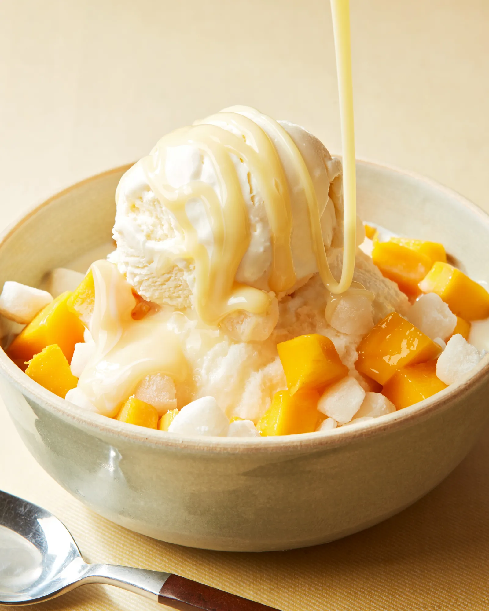

Bingsu

Bingsu is the dessert of the gods. Fresh, icey, creamy - what a delectable!
You got 5 minutes to spare?? This doesn't even require a time warper since it's that easy! Just slap all the ingredients together and bam!
Ingredients:
- 4 ½ cups milk
- ½ cup condensed milk, (sub with glucose or corn syrup)
- your choice of toppings (e.g. chopped fruit, red bean, condensed milk, candy, etc.)
Steps:
- In a freezer-safe container, mix the milk and condensed milk together using a whisk.
- Cover the mixture and freeze for at least 5 hours or overnight.
- While the mixture is freezing, prepare your toppings. You can chop up some fruits like mangoes, strawberries, kiwi or bananas. Set them aside.
- After the mixture has frozen, remove it from the container and wrap it in some plastic wrap. This will make it easier to hold.
- Hold the wrapped up milk block with a towel to protect your skin and begin shaving it into a bowl using a grater. You can also use a food processor with a grater attachment.
- Add your favourite toppings and drizzle some condensed milk on top. Enjoy!